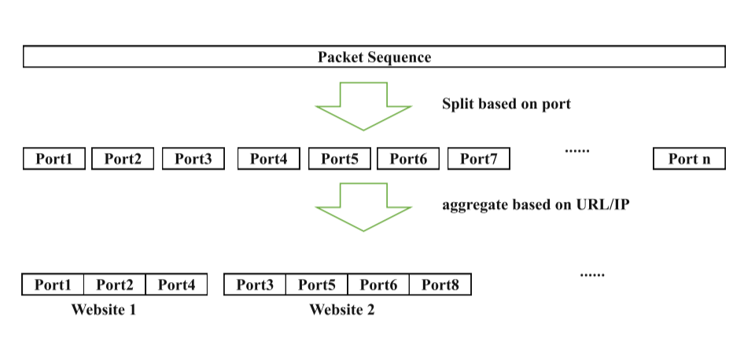
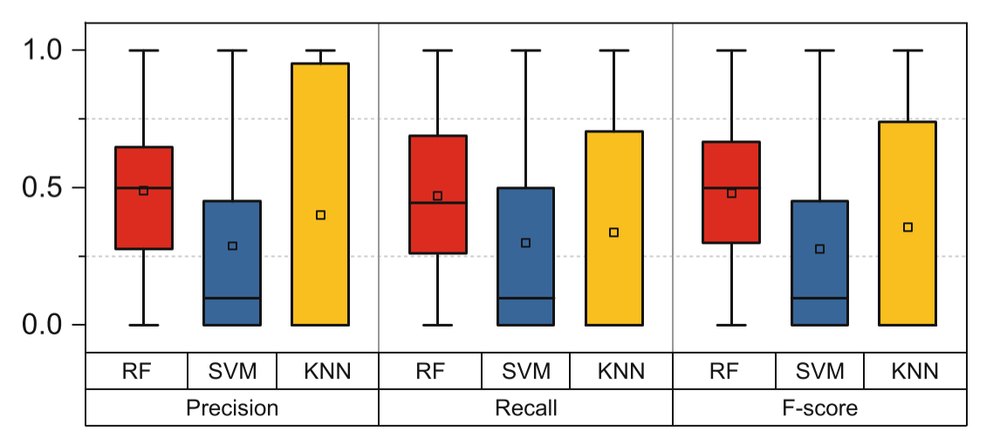
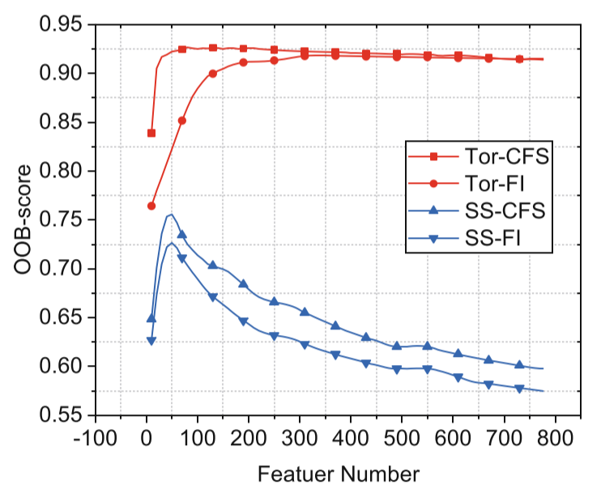
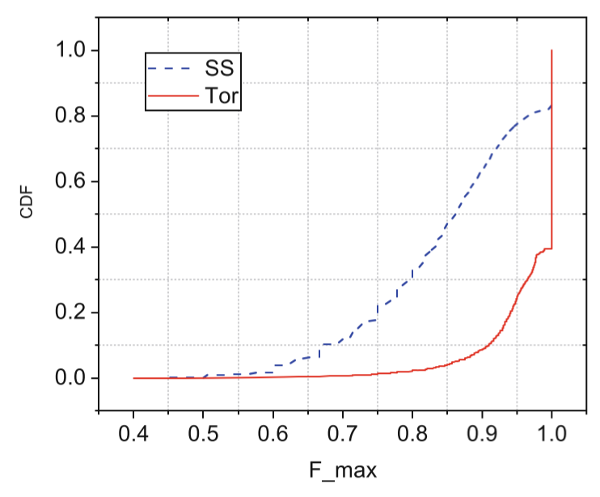
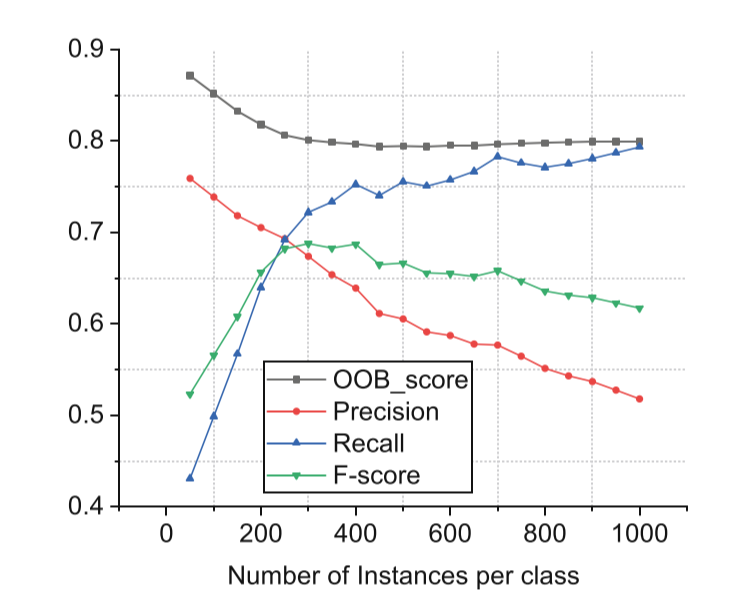

Yankang Zhao1,2, Xiaobo Ma1,2(B), Jianfeng Li1,2, Shui Yu3, and Wei Li1,2
-
Ministry of Education Key Laboratory of Intelligent Networks and Network Security, Xi’an Jiaotong University, Xi’an 710049, Shaanxi, China
-
School of Electronic and Information Engineering, Xi’an Jiaotong University, Xi’an 710049, Shaanxi, China xma.cs@xjtu.edu.cn
-
School of Software, University of Technology Sydney, Sydney, Australia
Abstract
Website fingerprinting has been recognized as a traffic analysis attack against encrypted traffic induced by anonymity networks (e.g., Tor) and encrypted proxies. Recent studies have demonstrated that, leveraging machine learning techniques and numerous side-channel traffic features, website fingerprinting is effective in inferring which website a user is visiting via anonymity networks and encrypted proxies. In this paper, we concentrate on Shadowsocks, an encrypted proxy widely used to evade Internet censorship, and we are interested in to what extent state-of-the-art website fingerprinting techniques can break the privacy of Shadowsocks users in real-world scenarios. By design, Shadowsocks does not deploy any timing-based or packet size-based defenses like Tor. Therefore, we expect that website fingerprinting could achieve better attack performance against Shadowsocks compared to Tor. However, after deploying Shadowsocks with more than 20 active users and collecting 30 GB traces during one month, our observation is counter-intuitive（违反直觉的）. That is, the attack performance against Shadowsocks is even worse than that against Tor (based on public Tor traces). Motivated by such an observation, we investigate a series of practical factors affecting website fingerprinting, such as data labeling, feature selection, and number of instances per class. Our study reveals that state-of-the-art website fingerprinting techniques may not be effective in real-world scenarios, even in the face of Shadowsocks which does not deploy typical defenses.
1 Introduction
As an attack leveraging（利用） side information such as packet time and packet sizes, website fingerprinting specializes in inferring user privacy of visited websites through eavesdropping（窃听） encrypted web traffic and anonymity tunnels (e.g., Tor). Before website fingerprinting was extensively studied [1][2][3]2, encrypted web traffic and anonymity tunnels had been commonly believed to preserve privacy by design, unless otherwise decrypted. However, recent years have witnessed the prosperity（繁荣） of website fingerprinting methods [4][5][6], causing a significant concern about user privacy of visited websites. This concern meanwhile gave birth to a number of website fingerprinting defenses (e.g., Buflo, adaptive padding, tamarraw, etc.) 3[7][8][9][10][11], aiming at frustrating（使...沮丧） the website fingerprinting attacks. In particular, the well-known anonymity project, Tor, always releases their advanced version when new defenses are proposed.
Despite their proved success by experiments, existing website fingerprinting attacks, according to the public media, have not become a means of real-life（现实） cyber attacks as prevalent as those like worm, botnet, password theft, and vulnerability exploit. We believe that the major reason is that website fingerprinting is a sophisticated（复杂的） attack heavily relying on machine learning techniques, whereas learning encrypted traffic patterns in real-world scenarios have practical issues. Thus, it is necessary to consider practical factors affecting website fingerprinting in real-world scenarios. In view of this, it is desirable to revisit website fingerprinting by deploying existing website fingerprinting techniques to attack real anonymity networks or encrypted proxies with real-life users.
In this paper, we concentrate on Shadowsocks (i.e., a popular secure socks5 proxy), and deploy Shadowsocks with 20 active real-life users and collect 30 GB traces during one month. These real-life users, from their computers or smartphones, use our Shadowsocks server almost every day to access the Internet, especially for visiting those websites that are under censorship and thus blocked. The reasons that we choose Shadosocks rather than Tor are three-fold. First, Tor is a high-delay network and often blocked by local organizations. So there is less opportunities for website fingerprinting attacks on it. Second, Shadowsocks is a lightweight and easy-to-use secure socks5 proxy. It has encrypted all communications with multiple optimal（多种最优） algorithms (e.g, AES, IDEA, RC4 and so on), and supports all kinds of major operating systems (e.g., Windows, OS X, Android and IOS). Hence, we can deploy it, providing services for many real-life users accessing the Internet. Shadowsocks has gained its popularity these years according to Google trend [12] and GitHub star 2. Third, the attack performance against Shadowsocks could reflect the upper bound（上限） of the attack performance against anonymity network such as Tor, because Shadowsocks does not deploy any timing-based or packet size-based defenses.
Focusing on Shadowsocks, we investigate and apply current attack techniques against Shadowsocks traffic. Meanwhile, we also perform the same attacks against Tor traffic published by Wang et al. 10. Then, we observe attack results to compare the attack performance. Throughout our investigation, we consider the following practical factors affecting website fingerprinting.
First, recent work usually collects traffic by sending requests automatically based on tools like Webdriver that can drive a browser like a user, fed by URLs. Because the process of sending request is under control, one can easily partition packet streaming into individual websites. Therefore, each sample trace can be labeled as a website straightforwardly. However, in a real-world scenario, this is not easy to accomplish. The reason is that we can only get continuous packets captured on network, but these packets that may come from different websites might be mixed together so that we cannot separate them easily. Therefore, packet partition is key point of website fingerprinting in a real-word scenario.
Second, for attack efficiency (high classification accuracy and low time overhead), it is critical to choose a suitable classification model. Previous studies usually pay attention to overall（整体的） attack performance across all classes, but considering the attack performance for each class in a multi-classification problem is also highly desirable（非常可取的）. For example, an attack may achieve good enough overall accuracy, but fails to correctly identify the samples belonging to a class (i.e., website). Therefore, we need to consider specific performance for each class for different classification models.
Besides, previous researchers usually try different models with their own feature sets, but they do not study the possibility of feature reduction（减少特征） for lowering computational overhead (high overhead hinders（阻碍） the practical usage of website fingerprinting) while ensuring accuracy. Although Hayes et al. introduced feature selection in [13], they do not perform evaluation（评价） using the most effective feature subset. Therefore, we select the most effective feature subset by a novel feature selection method. We also find that the attack performance can be further improved by optimizing the number of instances per class（优化每个类的实例数量） (i.e., website).
Third, current attacks mostly rely on a trial-and-error paradigm（试错范例） to evaluate performance rather than utilizing（利用） data intrinsic（固有的） distinguishability（可区分性）. Therefore, even if achieving（获得） a better or worse performance, we have no idea the complexity（复杂性） of distinguishable boundaries（可区分的边界） across different classes. It is essential to find a data complexity-based method（基于数据复杂性） to illustrate the underlying reasons for the attack performance.【这里想说的应该是机器学习的不可解释性】
Taking into the practical factors above, we investigate website fingerprinting against Shadowsocks, and make the following contributions.
- Following the real-world Internet censorship scenario, we label real-life Shadowsocks traces and perform website fingerprinting from the perspective（角度） of the ISP to make our attacks comply with the reality. In particular, we select unmonitored website number by the statistics of real-world traffic. We surprisingly find that the attack performance in real-world is worse than its in simulation, though the former does not deploy any website fingerprinting defenses but the latter does. Our finding suggests that website fingerprinting may not be effective as expected by the current literature in real-world scenarios.
- Unlike model selection solely based on classification accuracy, we consider not only overall attack performance, but also the performance of each class, along with（同时） a minimized time consumption for training and testing. We can obtain a better classification model (Random-Forest) based on metrics (F-score, Recall and Precision). It consumes less than 24s for training and just 0.6 s for testing, whereas more than 10 times time is consumed by other models (e.g., KNN, SVM).
- Combining（结合） traditional information theory and data complexity, we propose a novel feature selection to find an optimal set of features, along with a data complexity metric to more comprehensively（全面地） evaluate the attack performance.
We can achieve a better attack performance by less than 20% features, compared with adopting the entire set of features. Furthermore, we can improve attack performance by optimizing the number of instances per website.
Roadmap. We introduce related work and motivation in Sect. 2, and dataset in Sect. 3. We perform attack analysis in Sect. 4. Section 5 presents feature selection and Sect. 6 optimizes the number of instances. We finally conclude in Sect. 7.
2 Related Work and Motivation
2.1 Related Work
A number of website fingerprinting attack and defense methods have been proposed. The defender aims to obfuscate the traffic data so that the attacker cannot distinguish one website from another based on side information (e.g., packet sizes and ordering) of the encrypted communication. The attacker, who passively monitors the encrypted communication between an end user (whose privacy the defender wants to protect) and a private web proxy (e.g., Tor, Shadowsocks), builds the linkage between the actually visited web pages and the observed side information by selecting distinguishable features and effective classifiers.
Among all the private web proxies, Tor might be arguably the most notable one due to its second-generation onion routing mechanism with enhanced security. For example, Tor leverages cells with fixed sizes of 512 bytes for communication, removing features such as cell size distribution critical to website fingerprinting attacks. As Tor already conceals（隐藏） cell sizes, defenses focusing on cell (or packet) sizes, such as maximum packet padding, exponential packet padding（数据包填充）, traffic morphing [14]（流量变形）, and HTTPOS [15], are not applicable for Tor. Apart from the built-in defense by Tor itself, below are typical defenses that can be added to Tor for better defenses.
-
Adaptive Padding(AdaP)（自适应填充） was proposed by Shmatikov and Wang to defend against timing analysis by injecting dummy packets into statistically unlikely gaps（间隙） [16].
-
Decoy（诱饵） Pages [17]. This defense loads a randomly chosen web page (background page) simultaneously（同时） with the actually requested one. Non-monitored pages are randomly chosen as decoy pages.
-
BuFLO 7. It sends packets of a fixed size（固定大小） at fixed intervals for at least a fixed amount of time（至少一个固定的时长）. If a flow goes longer than the fixed time out, BuFLO lets it conclude while still using fixed-length packets at a fixed interval.
-
Tamaraw 3. Similar to BuFLO, traffic is forwarded through MTU-size packets at fixed intervals. However, the incoming and outgoing traffic are treated differently（处理方式有所不同）. Outgoing packets is dispatched（派遣） with a larger interval to decrease the overhead because they are less frequent.
To defeat these defenses, various attack methods, such as Naive Bayes (NB) [18], k-Nearest Neighbor (KNN) 10, Support Vector Machine (SVM) 17, k-fingerprinting that combines Random Forest(RF) and KNN 13, have been proposed. We perform attacks on Tor dataset with different defenses mentioned-above in order to observe performance of different attack methods. Besides the differences in classification algorithms, these methods employ different features of their own.
Table 1. The performance of website fingerprinting attacks against different defenses.
| Attack | Defense | ||||
|---|---|---|---|---|---|
| No defense | AdaP 16 | Buflo 7 | Decoy pages 17 | Tamaraw 3 | |
| NB 18 | 0.5816 | 0.4888 | 0.1827 | 0.0407 | 0.0050 |
| KNN 10 | 0.9047 | 0.8250 | 0.1410 | 0.3428 | 0.0236 |
| SVM 17 | 0.9096 | 0.8458 | 0.1135 | 0.3112 | 0.0453 |
| RF 13 | 0.9188 | 0.8563 | 0.1891 | 0.4858 | 0.0421 |
Table1 lists the performance of these website fingerprinting attacks against different defenses that are added to Tor, including the result without defense (i.e., there is none of extra defense). The performance is computed as the classification accuracy (i.e., the ratio of the instances correctly classified to all the instances). For the ease of comparison, the experiment was performed in a closed-world setting based on the Tor cell traces collected by Wang et al. 10, with 100 websites and 90 instances for each website.
The result indicates that Random-Forest outperforms（优于） KNN and SVM, consistent to Hayes et al. in 13. Note that Hayes et al. use the combination of Random-Forest and k-Nearest Neighbor to attack with open-world dataset, but only Random-Forest is used in close-world. In conclusion, we will pay attention to Random-Forest model, and analysis and comparison between KNN, SVM and Random-Forest will be detailed in Sect. 4.
2.2 Motivation
Although Tor is popular in anonymous communication, it is of high-delay and might be blocked by local organizations. In this paper, we concentrate on a secure socks5 proxy, named Shadowsocks. It is very popular these years due to lightweight, easy-to-use and multiple-operating system support. In particular, Shadowsocks client has been downloaded more than 50 thousand times according to Google’s Play store, and more than 112 thousand times according to ASO114 (i.e., the largest platform for mobile developer data analysis in China.). Its star number is more than 22 thousand on GitHub. Shadowsocks has become increasingly popular since 2014 according to Google trend, especially in China. Note it does not deploy any advanced defenses of traffic obfuscation like Tor.
Given the popularity of Shadowsocks, little attention has been paid to the website fingerprinting attack performance against Shadowsocks in a real-world scenario. We conjecture（推测） that people may believe that Shadowsocks does not deploy any defenses (e.g., packet padding or time modification) and thus attacking Shadowsocks are not expected to be academically challenging. Therefore, it is interesting to apply state-of-the-art website fingerprinting attacks to Shadowsocks to see to what extent Shadowsocks can protect user privacy against website fingerprinting by considering practical factors in Sect. 4.3.
3 Real-Life Shadowsocks Data Preparation
In this section, we introduce datasets including Tor and Shadowsocks traffic.
-
Tor dataset was published by Wang et al. in 3, named as Tor-W. It contains 100 websites with 90 instances each in close-world, and 9,000 websites with one each in open-world.
-
Shadowsocks datasets were collected in two ways. One collected 30 GB traces with 20 active real-life users during one month, named as SS, and it is also a research priority in this paper. In fairness to Tor result, two collected traffic produced by requesting Alexa’s Top 10,000 websites automatically with simulation in China where many sites were blocked , named as SS-sim.
As mentioned before, SS is collected from a real-world scenario, and it is recorded in a 30 GB-sized pcap binary file How to pretreat packets captured is also the core problem of deploying website fingerprinting into real-life scenarios. Specifically, we need to split this file into individual instances. As we know, one website fetch normally triggers more than one TCP connections. Thus, we need to determine which connections belong to a specific website fetch. We use a splitting method based on 4-tuple (i.e., source ip, source port, destination ip and source port), which is simple but conforms to a real-world attacker. Note that attacker collects traffic between local and remote proxy, so the ip and port belong to the proxies and can not expose user visiting. As Fig.1 shows, we first split a large packet sequence into some small pieces based on unique TCP port. Second, we aggregate（聚合） these pieces into slightly larger pieces based on requested URLs recorded in the Shadowsocks log file. Lastly, we will receive many packet sets, and each one belongs to a website. Specifically, the log of Shadowsocks server will record requested URLs, the corresponding ports, and the timestamps. In addition, the pretreament of SS-sim is similar.

Fig.1. The progress of splitting traffic
4 Website Fingerprinting Attack Analysis Against Shadowsocks
We propose website fingerprinting features as many as possible, and then introduce four metrics for performance evaluation.
4.1 Features Under Investigation
Features are of central importance in website fingerprinting attacks and defenses, where the attacker exploits informative features to perform attacks and the defender tries to conceal these features. Regardless of the specific encryption algorithms and anonymity tunnels, an instance of visiting a website (or webpage) can be described by a sequence of packets with various features. To facilitate（促进） our data-centric（以数据为中心） evaluation, we investigate existing features as many as possible, and categorize them into five types, namely, overall statistics, packet ordering, packet timing, head/tail statistics, and packet size.
Overall Statistics. This type of features centers around statistics regarding packet numbers and packet sizes. In the case of Tor, each cell is equally sized, thereby only statistics regarding packet numbers available. There are five specific features, including the total number of packets (total number), the number of outgoing packets (out number), the number of incoming packets (in number), the ratio of outgoing packets to all packets (out fraction), and the ratio of incoming packets to all packets (in fraction). Similar statistics regarding packet sizes can be derived.
Packet Ordering. This type of features focuses on the request-response interaction ordering between the client and the server, termed as packet ordering. More precisely, this type of features reflects where each outgoing/incoming packet occurs, especially each outgoing packet. Specific features include:
- Outgoing packet index. For each outgoing packet, we count the total number of packets before it (total before out packet). This number can represent the arrival order of the outgoing packet. The list of such numbers of all outgoing packets can be packet ordering features. We then derive two features to describe the packet ordering of outgoing packets, i.e., the mean value (pkt out ordering mean) and the standard deviation (pkt out ordering std) of the list of such numbers derived from all outgoing packets.
- Outgoing packet distribution（分布）. Another type of features related to packet ordering is the distribution (i.e., concentrated or dispersed（集中或者分散）) of outgoing packets along the session. To measure the distribution, packet sequence is partitioned into non-overlapping chunks（非重叠块） of 20 packets. We then count the number of outgoing packets in each of the chunks, and calculate the mean/maximum/minimum/medium values, and the standard deviation（标准差）, denoted by（用...表示） (pkt concentration). Note that we use * to denote the statistics such as mean, maximum, and quartiles. We also extract the list of the number of packets between two successive（连续的） outgoing packets (total between out pkt).
For incoming packets, we count the total number of packets before each incoming packet, and extract two features to describe the packet ordering of incoming packets, i.e., the mean value (in inter arrival) and the standard deviation (pkt in ordering std) of the list of such numbers derived from all incoming packets. In addition, we also borrow the feature that combines both the outgoing packets and the incoming packets in [19]. The feature calculates the cumulative packet size in both directions (e.g., an outgoing packet with size +1, an incoming packet with size −1) as the packet number increases. We use cumul n to denote（表示） the cumulative（累积的） packet size at the nth packet. Since different instances differ in packet number, we use interpolation（插值） methods to sample（采样） 100 values of cumulative packet size at fixed intervals（固定间隔）. Therefore, we have n = 1*,...,*100.
Packet Timing. Packet timing includes a set of features concerning time-related features that are mutually dependent, such as packet arrival rate, packet interarrival time, and packet transmission time.
- Packet arrival rate. The packet arrival rate is calculated every second. We then use five statistics to characterize the packet arrival rate, including the mean/maximum/minimum/medium value and the standard deviation (number per second list).
- Packet interarrival time. For all packets, we calculate four statistics regarding（对于） the interarrival times, namely, the mean/maximum/minimum/medium value and the standard deviation (total inter arrival). Similar statistics can be calculated for the outgoing/incoming packets (out_inter_arrival_*, in_inter_arrival_*).
- Packet transmission time. For all packets, we calculate the transmission times for the nth quartiles of packets (total n quartile). Similar statistics can be calculated for the outgoing/incoming packets (out n quartile, in n quartile).
Head/Tail Statistics. The characteristics of the head/tail packets may also be important in distinguishing one website from another. In particular, the total sizes of the head (e.g., first 30)/tail (e.g., last 30) packets are also features used in the literature. These sizes can be derived for the outgoing packets (first30 out number, last30 out number), the incoming packets (first 30 in number, last 30 in number).
Packet Size. Features extracted from packet size is important in website fingerprinting. Tor project has deployed defenses to hide packet size features. We first count the number of packet size in every interval, specifically, each interval is between 2n−1 bytes and 2n bytes. Then we derive the values of mean, median, std, third-quartile and sum from packet sizes of incoming, outgoing and overall respectively. In total, we can extract 27 dimension features from packet sizes.
Table2 summarizes all the features and their definitions. In total, we obtain 776 dimensions as packet size/timing features, among which 749 dimensions are packet timing features.
Table 2. Feature description
| Type | Feature name | Definition |
|---|---|---|
| number | total/in/out number | The number of all/incoming/outgoing packets |
| percentage | in/out percentage | The percentage of incoming/outgoing packets |
| ordering | in/out ordering mean/std | For each successive incoming and outgoing packet, the total number of packets seen before it in the sequence. Mean and std of ordering list |
| per second | number per second mean/std/median/ min/max/sum | Mean, std, median, min, max and sum of list of numbers per second |
| 30 packets | first30/last30 in/out number | The number of incoming and outgoing packets in the first and last 30 packets |
| interval | total/in/out inter arrival max/mean/std/3 quartile | For the total, incoming and outgoing packet streams extract the lists of interarrival times between packets.For each list extract the max, mean, standard deviation, and third quartile |
| quartile | total/in/out 1/2/3/4 quartile | For the total, incoming and outgoing packet sequences we extract the first, second, third quartile and total transmission time |
| concentration | pkt concentration max/min/mean/std/ median/sum | For chunks of 20 evenly sized packets extract a list of outgoing packets number,and then extract the max, min, mean, std, median and sum on the list |
| cumul | cumul 1/2/3.../100 | Deriving n features c1,c2,....c100 by sampling the piecewise linear interpolant.(Reference: Website Fingerprinting at Internet Scale) |
| before | total before out pkt 1/2/3../300 | The total number of packets before each outgoing packet |
| between | total between out pkt 1/2/3.../300 | The total number of packets between this outgoing packet and previous one |
| size statistics | pkt_size _in/out_1/2/ 3.../6 | Count the number of packet size in every interval (the nth power of 2) |
| size overall | pkt_size_in/out/overall_mean/median/std/ sum/3-quartile | Deriving mean, median, std, third-quartile and sum from packet sizes of incoming, outgoing and overall respectively |
4.2 Metrics
We employ four metrics to evaluate attack performance, including Precision, Recall, F1-Score and OOB-score. These metrics demonstrate attack performance in different aspects. They are detailed below.
- Precision is the fraction of relevant instances among the retrieved instances. It is intuitively the ability of the classifier not to label as positive a sample that is negative.
- Recall is the fraction of retrieved relevant instances over the total amount of relevant instances. It reflects the ability of a classifier to find all positive samples.
- F-score (a.k.a. F-measure) is a weighted harmonic mean of the precision and recall, where an F-beta score reaches its best value at 1 and worst score at 0.
- OOB-score equals approximately 3-fold cross-validation. It uses out-of-bag samples to estimate the generalization accuracy on the process of training Random-Forest model.
4.3 Evaluation
According to Table1, Random-Forest is a sophisticated model on website fingerprinting. To further demonstrate Random-Forest’s performance, we analyze classification ability of this model in detail. Specifically, website fingerprinting attack is a multi-classification problem. Thus, we need to observe the prediction performance of each class besides the overall performance. Meanwhile, we consider time consumption of training and testing for different models. By comparing the performance in different aspects, we can obtain the best model.

Fig.2. Illustrating the performance of Random-Forest based on three metrics.
Table 3. Comparison of time overhead (in seconds).
| Model | Train time | Test time |
|---|---|---|
| RF | 24*.*09 | 0*.*62 |
| KNN | 253*.*79 | 189*.*59 |
| SVM | 430*.*82 | 24*.*08 |
As for SS, although we collect more than 100 instances per website in closeworld, we use 70 instances each of 100 websites for training and another 20 instances for testing for fairness. Because the number of instances per website of Tao Wang’s dataset is only 90. At the same time, we select randomly 2000 websites and one instance each from open-world for training. The reason why choosing 2000 is that we conclude it from statistical analysis of all requests of one group in a month. More specifically, we count all unique websites requested by all group members, and then we find only about 1800 websites have been visited, meanwhile, including only 160 websites visiting more than 100 times. Base on these settings, we perform attacks with three models (i.e., Random-Forest(RF), Support Vector Machine(SVM) and k-Nearest Neighbor (KNN)).
We utilize Precision, Recall and F-score to evaluate predictions of each class. There are 100 classes for closed-world and one class for open-world (i.e., there are 101 classes in total.) as mentioned before. In Fig.2, it shows performance of three metrics on three models for these 101 classes. Obviously, KNN’s predictions are unbalance, Because it performs better on some websites and worse on the others. In particular, there are lots of terrible predictions (i.e., predict all samples are wrong in one class.) on testing. SVM is also similar with KNN because of 25% classes with terrible predictions. Besides, Table3 shows that the time overhead of Random-Forest is far smaller than the other two. According to three metrics and time overhead, we can conclude that Random-Forest is the best model for website-fingerprinting among the three models.
In order to observe the difference of scenarios, we perform attacks on datasets mentioned before using Rand-Forest with 500 trees and entropy criteria for tree splitting. Each result is the average value of 10 times running(all results of our experiments are calculated in the same way). For fairness, we select training and testing sets with the same way as experiment of Fig.2 on three datasets, and extract features according to Table2.
Table 4. Comparison based on metrics.
| Dataset | Precision | Recall | F-score | OOB-score |
|---|---|---|---|---|
| Tor-W | 0.9271 | 0.9041 | 0.913 | 0.9184 |
| SS | 0.5585 | 0.4209 | 0.4567 | 0.4871 |
| SS-sim | 0.9851 | 0.9766 | 0.9822 | 0.9806 |
The result of Table4 shows a surprising result about Tor-W, SS and SS-sim. According to the values of metrics, SS is obviously far worse than Tor-W, but SS-sim is better than Tor-W. The difference between SS and SS-sim is just experiment settings (i.e., SS is from real life but SS-sim is from simulation), however,they get two completely different results comparing with Tor. We can conclude that attack results heavily depend on different scenarios.
Different from Tor with some advanced defenses, Shadowsocks does not deploy any defenses on packet size and timing. It only obfuscates protocol and encrypts contents, but its attack performance is confusing. The result of SS-sim conforms to the intuition because there are more distinguishable characteristics（可区分的特征） on packets. However, the result of SS is counter-intuitive（反直觉的）. There are some possible reasons for this counter-intuitive result. In real-world scenarios, different users send requests in different ways, such as various browsers (e.g., Firefox, Chrome, Internet Explorer, etc.), various devices (e.g., Mobile Phone, Laptop, Desktop, etc.) and various networks (e.g., Wi-Fi, wired network, 4G network, etc.). As we know, different browsers have unique characteristics, different devices have their individual settings, and different networks differ in communication models.
Due to these differences, traffic patterns are hard to behave the same, even if two requests are exactly the same. In addition, the action of visiting sites may be terminated randomly at any time, so some packets do not be captured. In other words, we only get a part of website resource in this condition. In conclusion, although Shadowsocks traffic does not add any defenses like Tor, many real-world factors make traffic patterns become more complex, which hurdles good performance of website fingerprinting.
We can conclude that the performance of SS is worst on Table4, especially for the values of Recall, F-score and OOB-socre. We then consider the possibility of performance improvement by selecting the most effective features and increase samples on training. Based on feature description of Table2, it is not hard to find that there are some overlaps within different features. For better attack efficiency and performance, we hope to refine the entire feature set by finding the most effective feature subset.
5 Feature Refinement for Lower Overhead While Ensuring Accuracy
Feature selection not only benefits achieving a better accuracy of classification and cost minimization, but also helps to gain insight into the nature of the data. Packet size is very important for website classification intuitively in this domain, and Tor project has already hidden unique packet sizes via some effective defenses. In this section, we will compare attack performance between all features and feature subsets.
Table 5. Attacks on feature subsets
| Metric | Features (749) | Features (776) | Features (50) |
|---|---|---|---|
| F-Score | 0.4567 | 0.5269 | 0.6751 |
| Precision | 0.5585 | 0.6554 | 0.7457 |
| Recall | 0.4209 | 0.4738 | 0.6392 |
| OOB-score | 0.4871 | 0.5589 | 0.6763 |
We calculate the values of metrics based on the feature subsets. The results are shown in Table5. We can draw two conclusions. First, features extracted from packet size is powerful on website classification. For example, the whole feature set (i.e., 776 features) is better than the only features extracted packet timing (i.e., 749 features) in terms of Random-Forest attack. Second, website fingerprinting does not benefit from more features. For example, top-50 features selected can achieve the best performance. According to the results, we can conclude that feature selection is necessary for attack performance and picking the most efficient feature subset. Besides, we discover that top-50 features include 18 features extracted from packet size (note that only 27 features extracted from packet size). This result further illustrates the importance of packet size. In other words, we can utilize a small subset of features to achieve a best result, meanwhile, the subset includes a majority of the most effective features.
Inspired by the result of Table5, we decide to perform feature selections on website fingerprinting attack. These selections are based on information theory（信息论） and data complexity（数据复杂性） respectively. We introduce feature selection methods and then evaluate them in the following subsections.
5.1 Feature Selection
We analyze the datasets from a different angle, such as the nature of data, or data complexity. We will compare feature selection methods based on entropy criteria（熵准则） of Random-Forest and feature efficiency（特征效率） we proposed, respectively.
Feature Importances of RF. The feature importance is based on the progress of building Random-Forest (RF). It is a popular method for feature ranking（特征排名）, since we can apply it so easily without extra（额外的） feature engineering. In our experiments, we use a very popular python tool, scikit-learn [20], which implements the importance as described in [21]. It is sometimes called “gini importance” or “mean decrease impurity（杂质）”. Basically, the idea is to measure the decrease in accuracy on out-of-bag data when you randomly permute the values for that feature. If the decrease is low, then the feature is not important, and vice-versa（另一种方式）. We also call this feature importance (FI).
Feature Efficiency. Inspired by series of data complexity measures [22], we will introduce a new method of feature selection based on data complexity rather than information theory. The formula is as follows and called feature efficiency. $$ F(f)=1-\frac{|MAXMIN_f-MINMAX_f|}{|C_{jf}\cup C_{kf}|} $$ where $$ MINMAX_f = min(max(f,C_j),max(f,C_k)) $$
$$ MAXMIN_f = max(min(f,C_j),min(f,C_k)) $$
f denotes a feature, $|MAXMIN_f → MINMAX_f| $denotes the number of samples between $MAXMIN_f $and $MINMAX_f$ (i.e., the overlap region of two classes $C_j and C_k)$, and $|C_j \cup C_k|$ denotes the number of samples of the set $C_j \cup C_k$.
Though F is based on the overlap region（重叠区域）, it is measured by the ratio of the number of samples（样本数） within the overlap region (rather than the size of the overlap region) to that of all the samples. F quantifies the proportion of the samples that f can distinguish between each pair of classes. Intuitively, for any feature f, larger values of F indicate stronger distinguishability of f across different class. On the contrary, smaller values of F indicate weaker distinguishability.
尽管F基于重叠区域，但是它是通过重叠区域内的样本数（而不是重叠区域的大小）与所有样本的比率来测量的。F 量化了 f 可以区分每对类别的样本所占的比例。 直观地，对于任何特征f ， F的较大值表明 f 在不同类之间的可分辨性更强。 相反，F的值越小表示可分辨性越弱。
How does feature selection do based on measure F? Firstly, we calculate the feature efficiency for every feature over two classes and their instances, and then select the feature with the largest value of F. Next, we remove all the instances outside the overlap region of the selected single feature, and then select the second feature over the remaining instances using the same method. This procedure repeats until all the features are selected or all instances of the two classes are correctly classified. We perform the same thing for all pair of classes, and finally rank the features based on the total number of instances they can distinguish. We call this process collective feature efficiency (CFS).
如何基于度量F选择特征？ 首先，我们计算两个类及其实例上每个特征的特征效率，然后选择F最大值的特征。 接下来，我们删除所选单个要素重叠区域之外的所有实例，然后使用相同的方法在其余实例上选择第二个要素。 重复此过程，直到选择了所有功能或正确分类了两个类别的所有实例。 我们对所有的类都执行相同的操作，最后根据特征可以区分的实例总数对特征进行排名。 我们称此过程为集体特征效率（CFS）。
5.2 Feature Evaluation
According to the selection methods above, we compute OOB-score, which is a convincing metric because of cross-validation, for two datasets in close-world. More specifically, we will use 100 websites and 90 instances each for every dataset to evaluate performance, and then we observe the change of OOB-score values as adding features (step is 10) based on selections.
In Fig.3, selection based on CFS is better obviously, because it reaches peak with fewer features for all datasets. In addition, the peak value of OOB-score based on CFS is slightly better than its value based on FI, especially for Shadowsocks. More specifically, OOB-score reaches a maximum value with a small subset of the most effective features, and then the value will be gradually decreasing. Besides, it is obvious that difference of selections is large for different datasets. For example, the maximum value of Shadowsocks based on CFS is greater than 0.05 comparing with its value based on FI, but the maximum value of TorW based on CFS is just greater than 0.01 comparing with its value based on FI. Therefore, Shadowsocks has a greater improvement than TorW by feature selection. This result provides us a new viewpoint for attack performance optimization, and demonstrates the importance of feature selection. We therefore can further improve performance by a feature selection method like CFS.
5.3 Dataset Evaluation
In order to observe the complexity of samples from the nature, we calculate F for each feature over pair classes, and then get the max values. Formula as follows: $$ F_max_{jk} = \max_{f}F(f) $$
where $F_max_{jk}$ donates the max value of F for all features over class $C_j$ and class $C_k$. It is also considered as the maximum distinguishability（ 区分性） for pair class. Then, we can get the complexity of all samples given dataset by calculating F_max for each pair class.
To observe overall performance of dataset, we plot a CDF (i.e., cumulative distribution function（累积分布函数）) plot to analyze data complexity based on F_max. According to the definition, F_max indicates the maximum of F in each class pair, and thus a larger F_max value indicates this class pair is more distinguishable, and vice versa.

Fig.3. The attack performance of RF as

Fig.4**.** The data complexity of Tor-W we add features. and SS.
In Fig.4, it is obvious that overall distinguishability of Shadowsocks is weaker than Tor-W’s. For example, 8.5% F_max values are less than 0.9 on Tor-W, or 91.5% F_max values are greater than 0.9, which indicates most of class pairs are stronger distinguishable. However, there are 62% F_max values for less than 0.9 on Shadowsocks, or 38% F_max values are greater than 0.9, which indicates most of class pairs are weaker distinguishable. We can further demonstrate the difference of attack performance between datasets by analyzing data complexity. Although Tor-W has deployed many advanced defenses, the complexity of Shadowsocks is higher. This conclusion also explains why the attack performance of Shadowsocks is worse than that of Tor.
6 Tuning the Number of Instances for Better Attack Performance
Considering more patterns for each website in real-world scenario, the training of attack model with more samples could improve performance, because the model need lots of samples to learn to classify better. We perform website fingerprinting attacks against Shadowsocks using Random-Forest by varying the number of instances. Meanwhile, we adopt 10 websites and 1,000 instances for each website in the close-world data. The rest settings (including testing and open-world data) are the same as those in Sect. 4.
The values of Precision, Recall and F-score show different trends as varying the number of instances in Fig.5. Because the number of instances for testing is fixed（固定的） (10 websites and 20 instances for each website in close-world, and 1,000 websites in open-world), but the number of instances for training is varied（不同的） (10 websites and a varying number of instances for each website in close-world, and 2,000 websites in open-world). It is not hard to understand that Recall’s value will be larger and larger with increasing of proportion of instances in close-world, and Precision’s value is to the contrary. When the number is small (e.g., is less than 300.), the proportion of open-world instances is higher relatively and OOB-score is also not steady（不稳定） now. It is necessary for us to observe performance on more instances. Specifically, with the number increasing, Precision is decreasing, Recall is increasing and OOB-score is first decreasing and then keep steady. F-score value is maximum (i.e., F-score is 0.70, Recall is 0.74, Precision is 0.67 at this point) when the number of instances is 300, and OOB-score (i.e., is 0.80) is also steady here. Therefore, we conclude that the number can make an effect on attack performance.
In summary, we can achieve better performance by fine-tuning the number of instances per class when performing website fingerprinting. Because OOB-score is similar with 3-fold（3倍） cross validation, it is a reliable metric（可靠的指标）. When Recall reaches OOB-score’s steady value, we can choose the instance number of this point as an optimal number.

Fig.5. The attack performance as we vary the number of instances per class.
7 Conclusion
We studied website fingerprinting in a real-world scenario. We intuitively（凭直觉） expect Shadowsocks traffic is more distinguishable due to the absence of defenses. It is surprising to find that the attack performance of real-world Shadowsocks is worse because of more complex patterns in traffic. In order to improve performance, we first select the most effective classification model for website fingerprinting attack by comparing three metrics on each class and time overhead on training and testing. Then, we introduce two feature selection methods, feature importance and feature efficiency, to select the most effective features for the performance improvement. Meanwhile, we illustrate attack results by dataset intrinsic distinguishability based on feature efficiency. Finally, in view of the complexity of traffic patterns, we further improve the performance by increasing the number of samples, and a criterion（准则） was proposed for the selection of instance number based on OOB-socre and Recall.
References
-
Gu, X., Yang, M., Luo, J.: A novel website fingerprinting attack against multi-tabbrowsing behavior. In: Proceedings of the IEEE CSCWD (2015)
-
Shadowsocks, January 2018. https://github.com/shadowsocks/shadowsocks ↩︎ ↩︎
-
Cai, X., Nithyanand, R., Wang, T., Johnson, R., Goldberg, I.: A systematic approach to developing and evaluating website fingerprinting defenses. In: Proceedings of the ACM CCS (2014) ↩︎ ↩︎ ↩︎ ↩︎
-
Herrmann, D., Wendolsky, R., Federrath, H.: Website fingerprinting: attackingpopular privacy enhancing technologies with the multinomial na¨ıve-bayes classifier. In: Proceedings of the ACM CCSW (2009)
-
Hintz, A.: Fingerprinting websites using traffic analysis. In: Proceedings of thePET (2002)
-
Lu, L., Chang, E., Chan, M.C.: Website fingerprinting and identification usingordered feature sequences. In: Proceedings of the ESORICS (2010)
-
Dyer, K.P., Coull, S.E., Ristenpart, T., Shrimpton, T.: Peek-a-boo, i still see you: why efficient traffic analysis countermeasures fail. In: Proceedings of the IEEE Security and Privacy (2012) ↩︎ ↩︎
-
Ju´arez, M., Imani, M., Perry, M., D´ıaz, C., Wright, M.: WTF-PAD: toward an efficient website fingerprinting defense for tor. CoRR abs/1512.00524 (2015). http:// arxiv.org/abs/1512.00524
-
Nithyanand, R., Cai, X., Johnson, R.: Glove: A bespoke website fingerprintingdefense. In: Proceedings of the WPES (2014)
-
Wang, T., Cai, X., Nithyanand, R., Johnson, R., Goldberg, I.: Effective attacksand provable defenses for website fingerprinting. In: Proceedings of the USENIX Security (2014) ↩︎ ↩︎ ↩︎ ↩︎
-
Yu, S., Zhao, G., Dou, W., James, S.: Predicted packet padding for anonymousweb browsing against traffic analysis attacks. IEEE Trans. Inf. Forensics Secur. 7(4), 1381–1393 (2012)
-
Google Trend of Shadowsocks, January 2018. https://trends.google.com.hk/ trends/
-
Hayes, J., Danezis, G.: k-fingerprinting: a robust scalable website fingerprintingtechnique. In: Proceedings of the USENIX Security (2016) ↩︎ ↩︎ ↩︎
-
Wright, C., Coulls, S., Monrose, F.: Traffic morphing: an efficient defense againststatistical traffic analysis. In: Proceedings of the NDSS (2009)
-
Luo, X., Zhou, P., Chan, E., Lee, W., Chang, R., Perdisci, R.: Httpos: sealinginformation leaks with browser-side obfuscation of encrypted flows. In: Proceedings of the NDSS (2011)
-
Shmatikov, V., Wang, M.-H.: Timing analysis in low-latency mix networks: attacksand defenses. In: Gollmann, D., Meier, J., Sabelfeld, A. (eds.) ESORICS 2006. LNCS, vol. 4189, pp. 18–33. Springer, Heidelberg (2006). https://doi.org/10.1007/11863908 ↩︎
-
Panchenko, A., Niessen, L., Zinnen, A., Engel, T.: Website fingerprinting in onionrouting based anonymization networks. In: Proceedings of the ACM WPES (2011) ↩︎ ↩︎ ↩︎
-
Liberatore, M., Levine, B.N.: Inferring the source of encrypted HTTP connections.In: Proceedings of the ACM CCS (2006) ↩︎
-
Panchenko, A., et al.: Website fingerprinting at internet scale. In: Proceedings ofthe NDSS (2016)
-
Scikit-learn (2017). http://scikit-learn.org/stable/
-
Breiman, L.: Random forests. Mach. Learn. 45(1), 5–32 (2001)
-
Ho, T.K., Basu, M.: Complexity measures of supervised classification problems.IEEE Trans. Pattern Anal. Mach. Intell. 24(3), 289–300 (2002)